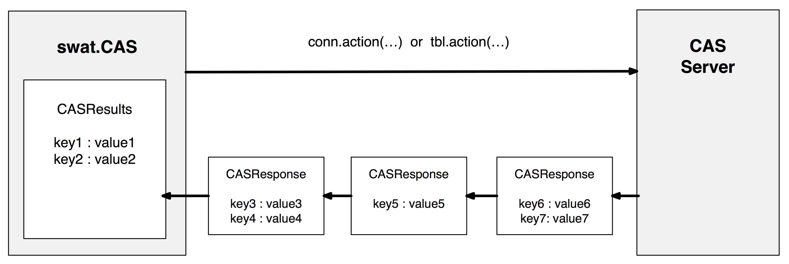
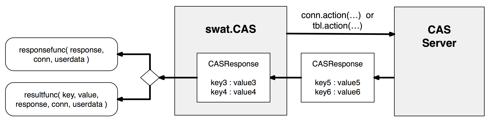
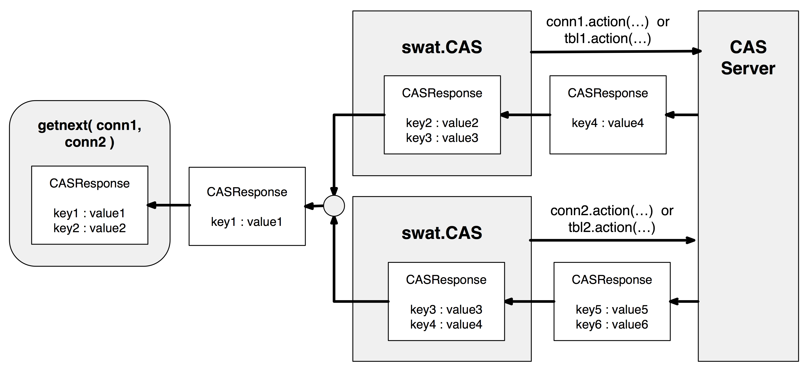

Workflows
The SWAT package includes the ability to call CAS actions and process the output in various ways. These range from simple (calling CAS actions as Python methods and getting a dictionary of results back) to complex (invoking CAS actions in multiple sessions and handling server responses from them directly). The various workflows are described in the following sections to give you an idea of how the classes in SWAT interact with each other.
The Easy Way
In the most basic form of calling CAS actions, the actions are called directly on the connection object or a CASTable object. When you load a CAS action set (using builtins.loadactionset), the CAS actions in that action set are added to the connection object as Python methods. For example, when the simple action set is loaded, the CAS connection object is extended with methods for summary, freq, crosstab, etc. These can then be called on the CAS connection object directly.
In addition, any CASTable objects that are registered with that connection also get methods for those actions. When you call a CAS action on a CASTable object, the table= (or name= and caslib= in some cases) parameter get populated automatically with that table object before it is sent to the CAS server.
Here is a simple example. We are reading a CSV file using the CAS.read_csv() method. This loads the CSV data into a CAS table and returns a CASTable object. You can then use many of the standard pandas.DataFrame methods such as pandas.DataFrame.head() to interact with the CAS table on the server.
In [1]: import swat
In [2]: conn = swat.CAS(host, port, userid, password)
In [3]: tbl = conn.read_csv('https://raw.githubusercontent.com/'
...: 'sassoftware/sas-viya-programming/master/data/cars.csv')
...:
Note: Cloud Analytic Services made the uploaded file available as table TMPEVVUDCZT in caslib CASUSER(test).
Note: The table TMPEVVUDCZT has been created in caslib CASUSER(test) from binary data uploaded to Cloud Analytic Services.
In [4]: tbl.head()
Out[4]:
Selected Rows from Table TMPEVVUDCZT
Make Model Type Origin DriveTrain MSRP Invoice EngineSize Cylinders Horsepower MPG_City MPG_Highway Weight Wheelbase Length
0 Acura MDX SUV Asia All 36945.0 33337.0 3.5 6.0 265.0 17.0 23.0 4451.0 106.0 189.0
1 Acura RSX Type S 2dr Sedan Asia Front 23820.0 21761.0 2.0 4.0 200.0 24.0 31.0 2778.0 101.0 172.0
2 Acura TSX 4dr Sedan Asia Front 26990.0 24647.0 2.4 4.0 200.0 22.0 29.0 3230.0 105.0 183.0
3 Acura TL 4dr Sedan Asia Front 33195.0 30299.0 3.2 6.0 270.0 20.0 28.0 3575.0 108.0 186.0
4 Acura 3.5 RL 4dr Sedan Asia Front 43755.0 39014.0 3.5 6.0 225.0 18.0 24.0 3880.0 115.0 197.0
You can call CAS actions directly on the CAS connection object and pass in the table argument, or you can call the CAS action directly on the CASTable object from CAS.read_csv().
In [5]: conn.summary(table=tbl)
Out[5]:
[Summary]
Descriptive Statistics for TMPEVVUDCZT
Column Min Max N NMiss Mean Sum Std StdErr Var USS CSS CV TValue ProbT Skewness Kurtosis
0 MSRP 10280.0 192465.0 428.0 0.0 32774.855140 14027638.0 19431.716674 939.267478 3.775916e+08 6.209854e+11 1.612316e+11 59.288490 34.894059 4.160412e-127 2.798099 13.879206
1 Invoice 9875.0 173560.0 428.0 0.0 30014.700935 12846292.0 17642.117750 852.763949 3.112443e+08 5.184789e+11 1.329013e+11 58.778256 35.196963 2.684398e-128 2.834740 13.946164
2 EngineSize 1.3 8.3 428.0 0.0 3.196729 1368.2 1.108595 0.053586 1.228982e+00 4.898540e+03 5.247754e+02 34.679034 59.656105 3.133745e-209 0.708152 0.541944
3 Cylinders 3.0 12.0 426.0 2.0 5.807512 2474.0 1.558443 0.075507 2.428743e+00 1.540000e+04 1.032216e+03 26.834946 76.913766 1.515569e-251 0.592785 0.440378
4 Horsepower 73.0 500.0 428.0 0.0 215.885514 92399.0 71.836032 3.472326 5.160415e+03 2.215110e+07 2.203497e+06 33.275059 62.173176 4.185344e-216 0.930331 1.552159
5 MPG_City 10.0 60.0 428.0 0.0 20.060748 8586.0 5.238218 0.253199 2.743892e+01 1.839580e+05 1.171642e+04 26.111777 79.229235 1.866284e-257 2.782072 15.791147
6 MPG_Highway 12.0 66.0 428.0 0.0 26.843458 11489.0 5.741201 0.277511 3.296139e+01 3.224790e+05 1.407451e+04 21.387709 96.729204 1.665621e-292 1.252395 6.045611
7 Weight 1850.0 7190.0 428.0 0.0 3577.953271 1531364.0 758.983215 36.686838 5.760555e+05 5.725125e+09 2.459757e+08 21.212776 97.526890 5.812547e-294 0.891824 1.688789
8 Wheelbase 89.0 144.0 428.0 0.0 108.154206 46290.0 8.311813 0.401767 6.908624e+01 5.035958e+06 2.949982e+04 7.685150 269.196577 0.000000e+00 0.962287 2.133649
9 Length 143.0 238.0 428.0 0.0 186.362150 79763.0 14.357991 0.694020 2.061519e+02 1.495283e+07 8.802687e+04 7.704349 268.525733 0.000000e+00 0.181977 0.614725
+ Elapsed: 0.00456s, user: 0.00679s, mem: 4.45mb
In [6]: tbl.summary()
Out[6]:
[Summary]
Descriptive Statistics for TMPEVVUDCZT
Column Min Max N NMiss Mean Sum Std StdErr Var USS CSS CV TValue ProbT Skewness Kurtosis
0 MSRP 10280.0 192465.0 428.0 0.0 32774.855140 14027638.0 19431.716674 939.267478 3.775916e+08 6.209854e+11 1.612316e+11 59.288490 34.894059 4.160412e-127 2.798099 13.879206
1 Invoice 9875.0 173560.0 428.0 0.0 30014.700935 12846292.0 17642.117750 852.763949 3.112443e+08 5.184789e+11 1.329013e+11 58.778256 35.196963 2.684398e-128 2.834740 13.946164
2 EngineSize 1.3 8.3 428.0 0.0 3.196729 1368.2 1.108595 0.053586 1.228982e+00 4.898540e+03 5.247754e+02 34.679034 59.656105 3.133745e-209 0.708152 0.541944
3 Cylinders 3.0 12.0 426.0 2.0 5.807512 2474.0 1.558443 0.075507 2.428743e+00 1.540000e+04 1.032216e+03 26.834946 76.913766 1.515569e-251 0.592785 0.440378
4 Horsepower 73.0 500.0 428.0 0.0 215.885514 92399.0 71.836032 3.472326 5.160415e+03 2.215110e+07 2.203497e+06 33.275059 62.173176 4.185344e-216 0.930331 1.552159
5 MPG_City 10.0 60.0 428.0 0.0 20.060748 8586.0 5.238218 0.253199 2.743892e+01 1.839580e+05 1.171642e+04 26.111777 79.229235 1.866284e-257 2.782072 15.791147
6 MPG_Highway 12.0 66.0 428.0 0.0 26.843458 11489.0 5.741201 0.277511 3.296139e+01 3.224790e+05 1.407451e+04 21.387709 96.729204 1.665621e-292 1.252395 6.045611
7 Weight 1850.0 7190.0 428.0 0.0 3577.953271 1531364.0 758.983215 36.686838 5.760555e+05 5.725125e+09 2.459757e+08 21.212776 97.526890 5.812547e-294 0.891824 1.688789
8 Wheelbase 89.0 144.0 428.0 0.0 108.154206 46290.0 8.311813 0.401767 6.908624e+01 5.035958e+06 2.949982e+04 7.685150 269.196577 0.000000e+00 0.962287 2.133649
9 Length 143.0 238.0 428.0 0.0 186.362150 79763.0 14.357991 0.694020 2.061519e+02 1.495283e+07 8.802687e+04 7.704349 268.525733 0.000000e+00 0.181977 0.614725
+ Elapsed: 0.00455s, user: 0.00258s, sys: 0.00344s, mem: 4.44mb
In [7]: conn.close()
The output from the CAS action methods is always a CASResults object. This is simply an ordered Python dictionary with a few extra attributes and methods added. You can see the keys printed in the output above (surround by square brackets). This output only contains a single key: Summary.
Here is a diagram showing the process of calling and action and consuming the responses into the CASResults object.
Using Response and Result Callbacks
The next workflow is to use callback functions to handle either the responses from the CAS server, or the individual result keys in the responses. You still use the CAS action methods on the CAS connection object, but this time you add either a responsefunc= or resultfunc= function argument.
The result callback function takes five arguments: key, value, response, connection, and userdata. Those are the result key and value, the response the result belongs to, the connection that the result belongs to, and an arbitrary user data structure.
The response callback just takes three arguments for the response, connection, and user data structure.
The result callback and response callback are called for each result and response, respectively. Keep in mind that you can only specify one or the other (a response callback would override a result callback). If you want to keep any sort of state information between calls, you can store it in the userdata argument and return it. The returned value will get passed in as the userdata argument on the next call.
Here is an example demonstrating both styles of callbacks.
In [8]: import swat
In [9]: conn = swat.CAS(host, port, userid, password)
In [10]: tbl = conn.read_csv('https://raw.githubusercontent.com/'
....: 'sassoftware/sas-viya-programming/master/data/cars.csv')
....:
Note: Cloud Analytic Services made the uploaded file available as table TMP8EPH1DI1 in caslib CASUSER(test).
Note: The table TMP8EPH1DI1 has been created in caslib CASUSER(test) from binary data uploaded to Cloud Analytic Services.
In [11]: tbl.head()
Out[11]:
Selected Rows from Table TMP8EPH1DI1
Make Model Type Origin DriveTrain MSRP Invoice EngineSize Cylinders Horsepower MPG_City MPG_Highway Weight Wheelbase Length
0 Acura MDX SUV Asia All 36945.0 33337.0 3.5 6.0 265.0 17.0 23.0 4451.0 106.0 189.0
1 Acura RSX Type S 2dr Sedan Asia Front 23820.0 21761.0 2.0 4.0 200.0 24.0 31.0 2778.0 101.0 172.0
2 Acura TSX 4dr Sedan Asia Front 26990.0 24647.0 2.4 4.0 200.0 22.0 29.0 3230.0 105.0 183.0
3 Acura TL 4dr Sedan Asia Front 33195.0 30299.0 3.2 6.0 270.0 20.0 28.0 3575.0 108.0 186.0
4 Acura 3.5 RL 4dr Sedan Asia Front 43755.0 39014.0 3.5 6.0 225.0 18.0 24.0 3880.0 115.0 197.0
In [12]: def result_cb(key, value, response, connection, userdata):
....: print('>>> RESULT', key, value)
....: return userdata
....:
In [13]: tbl.summary(resultfunc=result_cb)
>>> RESULT Summary Descriptive Statistics for TMP8EPH1DI1
Column Min Max ... ProbT Skewness Kurtosis
0 MSRP 10280.0 192465.0 ... 4.160412e-127 2.798099 13.879206
1 Invoice 9875.0 173560.0 ... 2.684398e-128 2.834740 13.946164
2 EngineSize 1.3 8.3 ... 3.133745e-209 0.708152 0.541944
3 Cylinders 3.0 12.0 ... 1.515569e-251 0.592785 0.440378
4 Horsepower 73.0 500.0 ... 4.185344e-216 0.930331 1.552159
5 MPG_City 10.0 60.0 ... 1.866284e-257 2.782072 15.791147
6 MPG_Highway 12.0 66.0 ... 1.665621e-292 1.252395 6.045611
7 Weight 1850.0 7190.0 ... 5.812547e-294 0.891824 1.688789
8 Wheelbase 89.0 144.0 ... 0.000000e+00 0.962287 2.133649
9 Length 143.0 238.0 ... 0.000000e+00 0.181977 0.614725
[10 rows x 17 columns]
In [14]: def response_cb(response, connection, userdata):
....: for k, v in response:
....: print('>>> RESPONSE', k, v)
....: return userdata
....:
In [15]: tbl.summary(responsefunc=response_cb)
>>> RESPONSE Summary Descriptive Statistics for TMP8EPH1DI1
Column Min Max ... ProbT Skewness Kurtosis
0 MSRP 10280.0 192465.0 ... 4.160412e-127 2.798099 13.879206
1 Invoice 9875.0 173560.0 ... 2.684398e-128 2.834740 13.946164
2 EngineSize 1.3 8.3 ... 3.133745e-209 0.708152 0.541944
3 Cylinders 3.0 12.0 ... 1.515569e-251 0.592785 0.440378
4 Horsepower 73.0 500.0 ... 4.185344e-216 0.930331 1.552159
5 MPG_City 10.0 60.0 ... 1.866284e-257 2.782072 15.791147
6 MPG_Highway 12.0 66.0 ... 1.665621e-292 1.252395 6.045611
7 Weight 1850.0 7190.0 ... 5.812547e-294 0.891824 1.688789
8 Wheelbase 89.0 144.0 ... 0.000000e+00 0.962287 2.133649
9 Length 143.0 238.0 ... 0.000000e+00 0.181977 0.614725
[10 rows x 17 columns]
In [16]: conn.close()
Here is the flow diagram for using callbacks. Note that only the result or response callback is called. It will not call both.
Handling Multiple Actions Simultaneously
The final workflow is the most hands-on, but also offers the most flexibility. For most cases, you can use the callback form to handle any size of data coming back from the CAS server. However, in that mode, you can only run one action at a time. If you want to run simultaneous actions and handle the responses as they come back from either connection, you need to use the CAS.invoke() method.
The CAS.invoke() method calls a CAS action, but doesn’t automatically retrieve the responses. You must iterate over the connection object to get the responses. To iterate over the responses for multiple connections, you can use the getnext() function. Using this technique, you can take advantage of running multiple CAS actions simultaneously while still just running in a single thread on the client.
In [17]: import swat
In [18]: conn1 = swat.CAS(host, port, userid, password)
In [19]: conn2 = swat.CAS(host, port, userid, password)
In [20]: tbl1 = conn1.read_csv('https://raw.githubusercontent.com/'
....: 'sassoftware/sas-viya-programming/master/data/class.csv')
....:
Note: Cloud Analytic Services made the uploaded file available as table TMPDIFHFG1E in caslib CASUSER(test).
Note: The table TMPDIFHFG1E has been created in caslib CASUSER(test) from binary data uploaded to Cloud Analytic Services.
In [21]: tbl1.head()
Out[21]:
Selected Rows from Table TMPDIFHFG1E
Name Sex Age Height Weight
0 Alfred M 14.0 69.0 112.5
1 Alice F 13.0 56.5 84.0
2 Barbara F 13.0 65.3 98.0
3 Carol F 14.0 62.8 102.5
4 Henry M 14.0 63.5 102.5
In [22]: tbl2 = conn2.read_csv('https://raw.githubusercontent.com/'
....: 'sassoftware/sas-viya-programming/master/data/cars.csv')
....:
Note: Cloud Analytic Services made the uploaded file available as table TMPYDKAJHZO in caslib CASUSER(test).
Note: The table TMPYDKAJHZO has been created in caslib CASUSER(test) from binary data uploaded to Cloud Analytic Services.
In [23]: tbl2.head()
Out[23]:
Selected Rows from Table TMPYDKAJHZO
Make Model Type Origin DriveTrain MSRP Invoice EngineSize Cylinders Horsepower MPG_City MPG_Highway Weight Wheelbase Length
0 Acura MDX SUV Asia All 36945.0 33337.0 3.5 6.0 265.0 17.0 23.0 4451.0 106.0 189.0
1 Acura RSX Type S 2dr Sedan Asia Front 23820.0 21761.0 2.0 4.0 200.0 24.0 31.0 2778.0 101.0 172.0
2 Acura TSX 4dr Sedan Asia Front 26990.0 24647.0 2.4 4.0 200.0 22.0 29.0 3230.0 105.0 183.0
3 Acura TL 4dr Sedan Asia Front 33195.0 30299.0 3.2 6.0 270.0 20.0 28.0 3575.0 108.0 186.0
4 Acura 3.5 RL 4dr Sedan Asia Front 43755.0 39014.0 3.5 6.0 225.0 18.0 24.0 3880.0 115.0 197.0
Now that we have the tables loaded, we can invoke the summary action on each one and retrieve the responses from both connections.
In [24]: tbl1.invoke('summary');
In [25]: tbl2.invoke('summary');
In [26]: for resp, conn in swat.getnext(conn1, conn2):
....: for k, v in resp:
....: print('>>> RESULT', k, v)
....:
>>> RESULT Summary Descriptive Statistics for TMPDIFHFG1E
Column Min Max N ... TValue ProbT Skewness Kurtosis
0 Age 11.0 16.0 19.0 ... 38.884748 8.049260e-19 0.063612 -1.110926
1 Height 51.3 72.0 19.0 ... 52.997076 3.202374e-21 -0.259670 -0.138969
2 Weight 50.5 150.0 19.0 ... 19.144897 2.045197e-13 0.183351 0.683365
[3 rows x 17 columns]
>>> RESULT Summary Descriptive Statistics for TMPYDKAJHZO
Column Min Max ... ProbT Skewness Kurtosis
0 MSRP 10280.0 192465.0 ... 4.160412e-127 2.798099 13.879206
1 Invoice 9875.0 173560.0 ... 2.684398e-128 2.834740 13.946164
2 EngineSize 1.3 8.3 ... 3.133745e-209 0.708152 0.541944
3 Cylinders 3.0 12.0 ... 1.515569e-251 0.592785 0.440378
4 Horsepower 73.0 500.0 ... 4.185344e-216 0.930331 1.552159
5 MPG_City 10.0 60.0 ... 1.866284e-257 2.782072 15.791147
6 MPG_Highway 12.0 66.0 ... 1.665621e-292 1.252395 6.045611
7 Weight 1850.0 7190.0 ... 5.812547e-294 0.891824 1.688789
8 Wheelbase 89.0 144.0 ... 0.000000e+00 0.962287 2.133649
9 Length 143.0 238.0 ... 0.000000e+00 0.181977 0.614725
[10 rows x 17 columns]
In [27]: conn1.close()
In [28]: conn2.close()
The flow diagram for handling multiple connections simultaneously is shown below.
